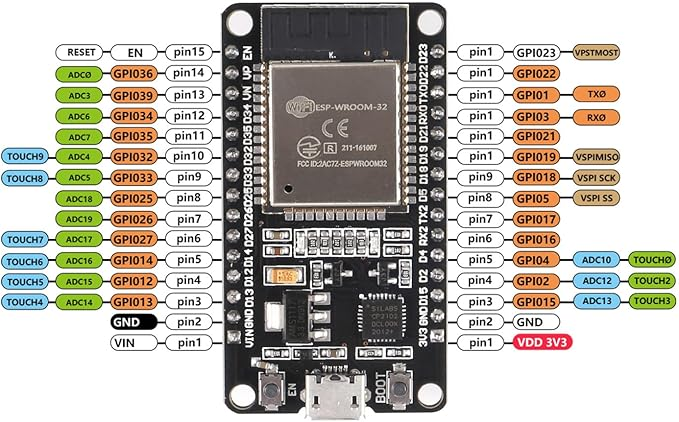

ESP32 Support
Select Board and Port
Choosing ESP32 Dev Board
Large download starts, messages from Arduino IDE:
Downloading packages
arduino:dfu-util@0.11.0-arduino5
esp32:esp-rv32@2405
esp32:esp-x32@2405
esp32:3.1.1: esp32:esp32-arduino-libs@idf-release_v5.3-cfea4f7c-v1
esp32:esptool-py@4.9.dev3
etc.
Where are these packages stored?
~/.arduino15/staging/packages
For model "Aokin ESP32 ESP-WROOM-32 Development Board 2.4 GHz WiFi and Bluetooth Dual Cores Microcontroller
ESP-WROOM-32 Chip for Arduino NodeMCU"
https://www.amazon.com/dp/B08NW6YZ8W

During installation, IDE says that board not found,but now more ESP32 boards are offered for selection.
Selecting ESP32-WROOM-DA works